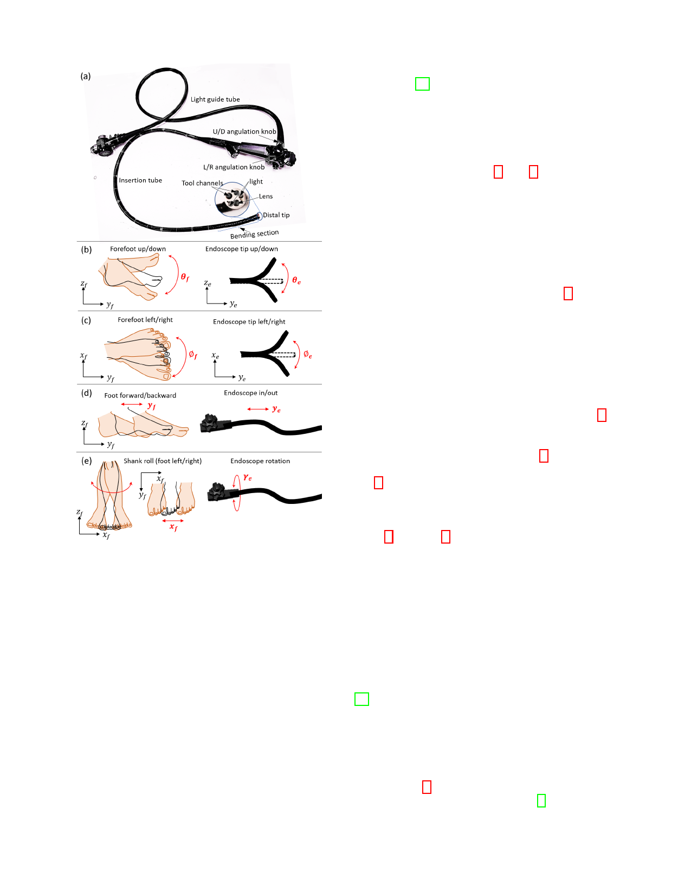

3
presented and verified in an in-vivo test for an endoscopic
suturing task [24], which was however controlled by a surgeon
and an endoscopist together. The current system is a further
development of the previous system, requiring only one oper-
ator to control all the three slave arms simultaneously.
Fig. 2. Mapping natural foot motions to control the (a) flexible endoscope in
four DoFs of (b) Up/down bending, (c) left/right bending, (d) translation and
(e) rotation. (Right foot is illustrated here).
In endoscopic surgery, the two flexible instruments, passing
through the channels inside the endoscope, can perform dex-
terous manipulation; the endoscope can enlarge the workspace
of the operation, bring instruments to the target area. Accord-
ingly, we use a foot interface to capture the foot gestures;
two hand haptic interfaces to collect the motion signals of the
hands. These motions are then transmitted to the slave robots,
i.e., the endoscope and the two instruments. This design, setup
and control of the system aim to increase the transparency and
intuitiveness between the master and slave control.
III. ROBOTIC SYSTEM
This section presents an overview of the system. It includes
the slave robotic endoscope and instruments, master hand-
controlled and foot-controlled interfaces. The robotic endo-
scope and the two-hand-controlled robotic instruments system
are two independent systems. The latter platform has been
A. Slave robotic endoscope
The robotic endoscope (Fig. 1b and 3) includes three mod-
ules motorizing the standard endoscope in four DoFs: 1) a
bending module (BM) controlling the two-DoF bending of
the distal tip; 2) a translation module (TM) executing the
in/out DoF of the endoscope; 3) a rotation module (RM)
implementing the rolling DoF of the whole endoscope along
the longitudinal axis. The commercialized endoscope can be
easily and quickly assembled or disassembled on the robotic
system without any modification.
1) Bending module: The left panel of Fig. 3b presents the
assembly of the BM; the right panel shows the exploded view
of the connection parts to the endoscope. The claw shape knob
connector mechanism are attached to The control knobs of
the endoscope. Once the endoscope is connected, lifting up a
tightening ring 22 can secure the knobs with connected shafts.
Two motors with gears can drive the connected shaft and knobs
through the gear transmission mechanism. The motion in these
two DoFs can be controlled either separately or together.
2) Rotation module: The rotation module (Fig. 3c) can
drive the tyre-shape BM and endoscope to rotate around
endoscope’s longitudinal axis. Weight block 16 is added to
BM to balance the rotating mass (Fig. 3b). The rotation is
transmitted through pulley and cable when motor 26 rotates
(Fig. 3c). The rolling DoF and translation DoF are decoupled.
When the rotation is activated, the TM looses the endoscope
to allow its rotation.
3) Translation module: The structure of TM is shown
in Fig. 3a and Fig. 3d. The endoscope can be easily passed
through the four rollers by slightly lifting the L-shape plate 32 .
In addition, the mechanism can fit the endoscope with different
diameters through moving the width adjustment sleeves 33 .
The driven cables 34 are tightened after the assembly. The
roller part is also a pulley with cables. Two sets of the
cables 2 , 34 are driven by the same motor forming a push-
pull mechanism. Which brings the whole endoscope including
the BM and RM move forward/backward together along the
guided rails. This design can keep the consistent configu-
ration of the endoscope to maintain the accumulated angle
unchanged, thus ensuring the accurate control of the distal tip
[25]. The current system range of 500 mm translation can be
extended by using longer guided rails.
B. Slave robotic instruments
In the current system, the two robotic instruments include
a grasper (left) and a monopolar cauterizing hook (right),
shown in Fig. 4. They can be changed to other surgical
instruments, such as a suturing device [5]. Each robotic arm
can provide four-DoF motion (the grasper has an additional
grasping motion). The bending and grasping DoFs are driven
by tendon-sheath mechanism, where each DoF is controlled